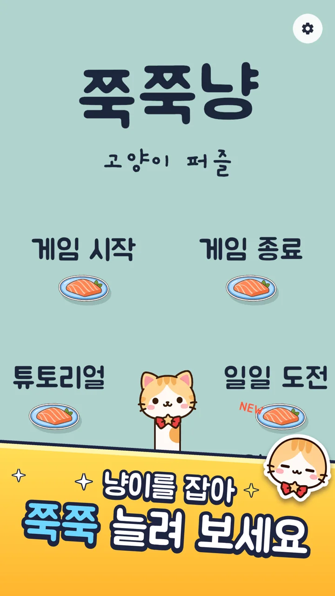
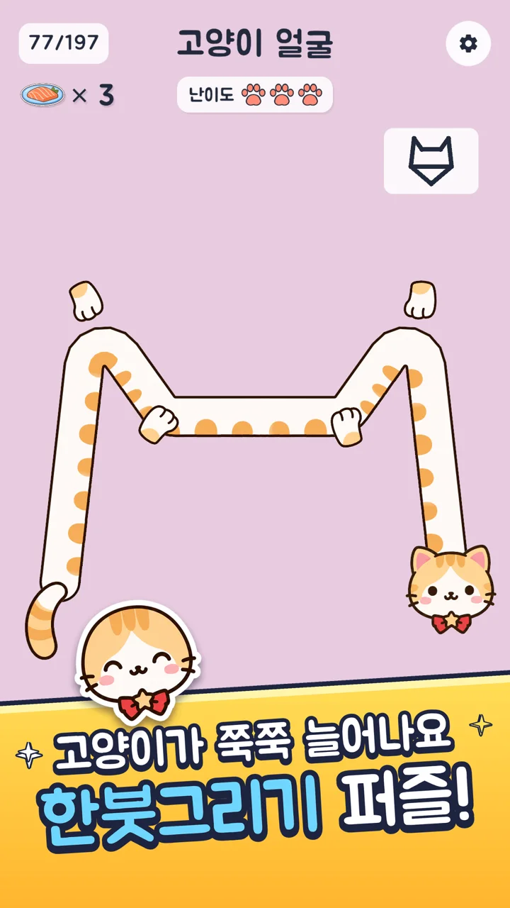
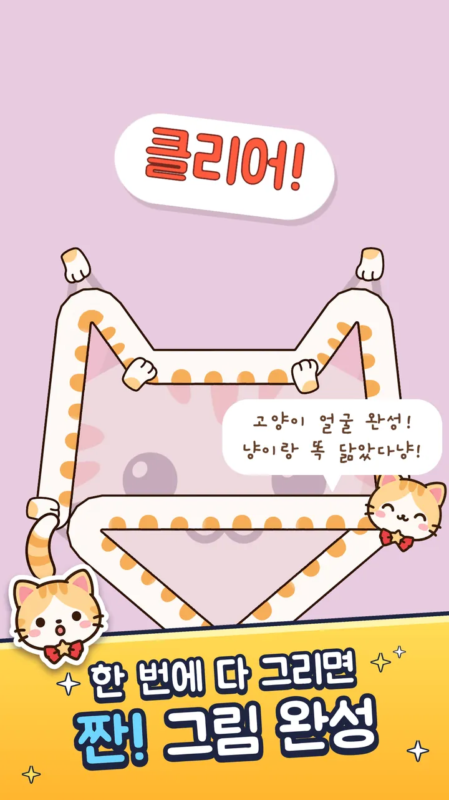

AI와 함께 만든 1인 개발 게임
쭉쭉냥 : 고양이 퍼즐
기획부터 Google Play 출시까지,
AI와 어떻게 만들었는지 정리했습니다.
- 1인 개발
- 레벨 197개
- Google Play 178개국
방향키나 마우스 휠로 넘겨 보세요 →


1. 결과 · 한눈에 보기
혼자서, AI와 함께 출시까지 마쳤습니다
- 197레벨튜토리얼 4단계는 따로
- 1,573자동 테스트고친 뒤 다시 돌려 확인
- 178출시 국가Google Play 정식 공개
- 3주 반기록된 작업 기간2026. 9. 29 ~ 10. 23
- 한국어 · 영어
- 매일 새 퍼즐 3개
- 메달 6단계
- Android · PC
1. 결과 · 어떤 게임인가
고양이를 늘여서 모양을 그립니다
늘어나는 고양이 몸으로 견본의 모든 선을 한 번씩 지나는 한붓그리기 퍼즐입니다.
- 간편한 조작감조작 습관이나 실수 때문에 지는 일이 없습니다
- 손맛 있는 한붓그리기몸이 접시에 감기고 풀리며 소리가 납니다

2. AI와 일한 방식 · 내가 정한 것, AI가 한 것
방향은 제가 정하고, 만드는 일은 AI가 했습니다
-
사람제가 정한 것
- 난이도 기준: 같은 생선을 다시 지나는 횟수
- 소리 취향: 무거운 효과음 대신 가벼운 소리
- 레벨 순서: 난이도대로 다시 배치
- 올리기 전에는 꼭 제 확인 받기
-
AIAI가 한 것
- 게임 코드와 레벨 검사 도구
- 레벨 배경 그림, 앱 아이콘, 메달 그림
- 자동 테스트와 빌드
- 게임 자료 조사와 스토어 문구
2. AI와 일한 방식 · AI 팀 구성
AI마다 잘하는 일을 나눠 맡겼습니다
-
개발Claude Code
- 게임 코드
- 검사 도구
- 테스트·빌드
-
그림Codex
- 레벨 배경
- 앱 아이콘
- 메달 그림
-
조사·문구Sonnet
- 퍼즐 게임 8개 조사
- 스토어 문구
-
문장Gemini
- 제가 쓴 글 다듬기
2. AI와 일한 방식 · 일하는 순서
매번 같은 순서로 일했습니다
AI가 지켜야 할 규칙을 파일로 적어 두고, 검사를 통과한 것만 남겼습니다.
- 1규칙 파일할 일과 지킬 것
- 2작업코드·그림·레벨
- 3검사파이썬·Unity
- 4기록한 일과 이유
- 5커밋저장하고 다음 일로
↻ 다음 작업도 1번부터 다시
2. AI와 일한 방식 · 개발 일정
기록된 작업 기간은 3주 반입니다
- 프로토타입첫 커밋
- 핵심 플레이튜토리얼까지
- 콘텐츠힌트·일일 도전·메달
- 출시 준비비공개 테스트
- 레벨 197개테스트 의견 반영
3. 사례 · 레벨 197개 만들기
레벨마다 풀리는지 검사하고, 그림을 겹쳐 봤습니다
- 모양 정하기
- 그리는 순서 찾기파이썬
- 재생 검사정말 풀리는지
- 배경 그림Codex
- 겹쳐서 확인선과 그림이 맞는지

3. 사례 · 난이도 기준 다시 세우기
난이도는 "다시 지나는 횟수"로 나눴습니다
"사람들이 어렵게 느끼는 건 같은 생선을 한 번 더 지나갈 때"직접 해 보고 제가 찾은 기준
- 71쉬움다시 지나는 곳 0번
- 38보통다시 지나는 곳 1번
- 91어려움다시 지나는 곳 2번 이상
(난이도 재정의 당시 200개 기준)
3. 사례 · 사람이 잡아낸 문제
폰에서 직접 해 보고 문제를 찾았습니다
- 폰에서 화면이 뚝뚝 끊김→60프레임, HDR 끔, 글자 미리 그려 두기
- 긴 폰에서 UI가 잘림→화면 맞춤 방식 바꿈, 세로 1080×1920 확인
- 묵직한 "두둥탁" 효과음→원래의 가벼운 소리 유지
제가 잡은 문제는 다음부터 지킬 규칙으로 남겼습니다.
3. 사례 · 품질 확인
고칠 때마다 자동 검사로 확인했습니다
- 134 →1,573자동 테스트기능이 늘 때마다 함께 늘림
- 5 →0일일 퍼즐 차이파이썬과 게임이 만든 퍼즐 2,160개 비교
- 0 →20개코드 점검찾은 문제 모두 고침
4. 출시 · 출시까지
Google Play 검토를 거쳐 정식 출시했습니다
- 비공개 테스트테스터 12명 · 14일
- 1.0.1 검토 통과테스터에게 업데이트
- 한 번 막힘데이터 보안 설문을 고쳐 다시 냄
- 정식 출시 승인178개국
5. 마무리 · 배운 점과 한계
부족했던 점도 남겨 둡니다
- 난이도 설계가 가장 약했습니다점수로 나눴다가, 해 보고 나서야 기준을 다시 세웠습니다
- 출시가 끝이 아닙니다테스트 의견을 받아 레벨과 난이도를 계속 고쳤습니다